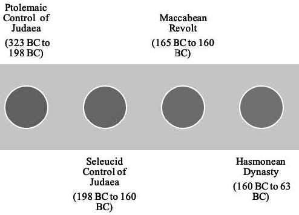

Computing and Crucible Eras
The focus in this article is not on any specific games but rather on the broader historical context in which games, and gaming, came to be situated in a technology context, specifically that of computing.
A Basis in Experimentation ...
Exploring the early days of computing and game development is like peering into the wild west of technology. In the nascent stages, hobbyists — armed with programming languages like BASIC — were somewhat similar to pioneers in uncharted territory.
These early game developers weren't just coding; they were conducting experiments, pushing the limits of the available technology to see what it could do.
It was a fusion of creativity and curiosity, where every line of code was a step into the unknown. Much like scientists in a lab, they were learning by doing, discovering the capabilities and constraints of the hardware as they went along.
Crucially, these games weren't just entertainment; they were manifestations of the evolving relationship between humans and machines, each line of code a small triumph in the ongoing saga of technological discovery. It was a time when the boundaries of possibility were drawn by the imaginations of those who cared enough, or were interested enough, to experiment with the digital frontier.
... But a Focus on Computation
Arguably computer science should have been called computing science. Or, at the very least, perhaps there should have been a shift to that terminology as the technology evolved more beyond the hardware itself and into what the software that was running on that hardware actually did.
When I say "computation," please understand that this isn't just about the mechanics of programming or coding. It's about computational design, the latest incarnation of which is most manifested in applications of artificial intelligence.
As a matter of interest, artificial intelligence actually grew up with the idea of technology-based gaming and continues to be used in that context today.
Computation has always been, and still is, what transforms the design of our products and services. This is the intersection of humans and technology, an area that's always fascinated me. Design has always determined how humanizing or dehumanizing that intersection is. One of the ways that computing was always most humanized was when it focused on simulations and games.
When Computing Was Human
It's probably worth keeping in mind that the first computers weren't machines. They were instead human beings. They were humans who computed, by which was meant "worked with numbers."
Consider that way back in 1613 a poet named Richard Brathwait, in his The Yong Mans Gleanings, said:
What art thou (O Man) and from whence hadst thou thy beginning? What matter art thou made of, that thou promisest to thy selfe length of daies: or to thy posterity continuance. I haue read the truest computer of Times, and the best Arithmetician that euer breathed, and he reduceth thy dayes into a short number: The daies of Man are threescore and ten.
Did you spot that interesting word in there? Computer. I'll say again: this passage was from 1613.
So who is this "best Arithmetician" that Brathwait is referring to here? Some have argued that he was conceiving of the "computer of Times" as a divine being that would be able to calculate the exact length of a person's life. Others suggest that Brathwait was legitimately referring to a person who's very good at arithmetic.
As an interesting related note, the mathematician Gottfried Leibniz said this:
If controversies were to arise, there would be no more need of disputation between two philosophers than between two calculators. For it would suffice them to take their pencils in their hands and to sit down at the abacus, and to say to each other . . . Let us calculate.
That was in his 1685 book The Art of Discovery. Here when he says "calculators" he's referring to people and "calculate" as an action they do. Note that Leibniz didn't use the term "computers" or "compute." This makes it all the more interesting that Brathwait seemingly did hit upon that term.
As far as we know, Brathwait is the first to actually write the word "computer" even if we're not quite sure what he meant by it. According to the Oxford English Dictionary there was an earlier usage. Apparently the term "computer" was first used verbally back in 1579. No details are provided and so, at least to my knowledge, there's no way to actually corroborate that.
That said, the reference in the Oxford English Dictionary links the verbal use of the term from 1579 to "arithmetical or mathematical reckoning." And this certainly was a task done by people. This is referenced by Sir Thomas Browne in volume six of Pseudodoxia Epidemica from 1646 as well as Jonathan Swift in A Tale of a Tub from 1704.
So while we don't have a direct thread linking Brathwait's use of the term to those later usages, it's clear that the general idea of "computing," even if going by another name, was in the general Zeitgeist and was focused on what we would certainly now call "computing."
In 1895, the Century Dictionary defined a "computer" as:
One who computes; a reckoner; a calculator.
So what we see here is some sort of continuous thread from at least 1613 (and possibly 1579) up to 1895 regarding the notion of "computing."
If we take a side trip into etymology, the root com originates from Latin, meaning "together." The suffix puter likewise has its basis in the Latin word putare which means "to think or trim." Some have proposed that the idea of computer thus meant a "setting to rights" or a "reckoning up."
Eventually computing machines came along to replace the human computers. A relevant idea that really resonated with me comes from John Maeda in his book How To Speak Machine: Computational Thinking for the Rest of Us:
To remain connected to the humanity that can easily be rendered invisible when typing away, expressionless, in front of a metallic box, I try to keep in mind the many people who first served the role of computing 'machinery' . . . It reminds us of the intrinsically human past we share with the machines of today.
Indeed! And as we try to build computing solutions that "learn more like us" or "act more like us" or "think more like us," I think that Maeda's reminder takes on an interesting focus. And that focus of a human past we share with our technology becomes very interesting in the context of games.
The Broad Context of Games
The idea of playing games is an activity that has been with humans a long time, certainly before those games could be rendered via computing technology. In fact, it might even be fair to say that aspects of "game playing" existed in species that pre-date humans.
This is a really important point that I'll state once again: the concept of game playing is deeply ingrained in the fabric of existence, extending far beyond the advent of computing technology. If we take a stroll through the evolutionary timeline, we can see traces of playful behavior in various species predating humans.
Play serves as a fundamental mechanism for learning, adaptation, and social interaction. From the intricate mating rituals of birds to the strategic pouncing of big cats, elements of what we might call "game playing" are evident. In the broader context, it's not just a human phenomenon; it's a thread woven into the very essence of life.
As we dive into the realms of computing, we're essentially tapping into and formalizing a practice that has ancient roots in the evolutionary playbook. Games in the context of computing are a digital manifestation of a timeless instinct for exploration, strategy, and, perhaps, a touch of whimsy that has accompanied life since its early forms. In this context, we've seen an interesting form of human evolution.
Games have continued to intersect with artificial intelligence, as both grew up together, and we're in a time now where humans are intersecting more directly with artificial intelligence itself, even outside the context of gaming. Thus, according to some, we might be on a path to a different form of evolution.
But to see how we're getting from there to here and from then to now, it helps to look at the computing eras that provided a nexus point for a crucible. Sticking with the evolutionary theme, I would argue that this crucible provided a bit of a punctuated equilibrium to what could have instead been a process much more focused on gradualism.
Computing Eras
So let's talk a little about the idea of specific computing eras. Even more specifically, I want to bring up the idea of a particular bridging "era" that separates two of what are broadly recognized as the primary eras of computing.
What led to me to frame this approach stems from a lot of research I've been doing into ludology and narratology in terms of how gaming evolved in the context of computing. The bridging "era" that I refer to provided a bit of a crucible. In my research I found that this crucible dramatically shaped the future development of simulations and games and thus had an outsized impact on ludic and narrative aspects, which have long fascinated me.
What's also of interest to me is that a lot of this work on gaming and simulations intersected with research into artificial intelligence, such as algorithms being able to play games as well as a human could. This was, in fact, one of the early barometers that people proposed to understand if we had truly created an artificial intelligence.
Here I recommend the book Deep Thinking: Where Machine Intelligence Ends and Human Creativity Begins by Gary Kasparov. Yes, that Kasparov; the one who was defeated by IBM's Deep Blue computer in a series of games of chess in 1997.
The book Computer: A History of the Information Machine presents an interesting way to frame some history around the computer itself and I'll expand on that here a bit. In August of 1890, the magazine Scientific American put on its cover a montage of the equipment constituting the new punched-card tabulating system for processing the United States Census.
In January of 1950, the cover of Time Magazine showed an anthropomorphized image of a computer wearing a Navy captain's hat. This was part of a story about a calculator built at Harvard University for the United States Navy.
In January of 1983, Time Magazine had to once again choose its "Man of the Year." The editorial staff chose to reframe the idea as "Machine of the Year" and gave the award to the personal computer.

Following those threads leads you on an interesting journey on how the computer was viewed throughout a certain period of history. This, by definition, put an emphasis on the perceived importance of computing.
Going through that history, you see there was a time when large organizations began adopting computing technology at an ever-increasing rate. This was done as they saw such technology as the solution to their information and data-processing needs.
The Computer Context
By the end of the nineteenth century, desk calculators were being mass-produced and installed as standard office equipment. This took place first in large corporations, then later in progressively smaller offices and, finally, in retail contexts.
While this was going on, the punched-card tabulating system developed to let the United States government cope with its 1890 census data gained wide commercial use in the first half of the twentieth century. That's what the above Scientific American issue was making visible to its audience.
Analog Computers
Another thread winding through the late nineteenth century into the early twentieth was the emergence of a particular form of computing known as analog computing. This reached its peak in the 1920s and 1930s.
Analog computing was a method of computation that involved using physical models and devices to perform calculations by directly manipulating continuous signals. Engineers would build electrical or mechanical systems that represented the mathematical equations involved in a particular problem. Once that was done, they would then use these systems to measure the values required to perform the desired calculations.
Analog computers were utilized in a lot of different fields, including the design of emerging electric power networks, where the nature of this kind of computing could help analyze power flow and stability.
Yet, there was a downside. The analog technologies were characterized by slow computation times. This was partly due to the physical nature of the devices and the fact that they operated on continuous signals, which required time for various processes to start and finish.
Adding to that problem, analog computers often required skilled operators or engineers to set up and calibrate the devices for specific tasks.
Adjusting the physical components to represent the desired mathematical model was a manual process that demanded a certain amount of expertise.
This human involvement obviously made analog computing less automated and more labor-intensive although, on the plus side, it did mean that at least someone had a pretty good idea of how the thing was actually working.
Another big challenge, however, was that analog computers were typically designed for specialized tasks. Or, rather, one particular specialized task. Engineers would construct analog systems tailored to solve particular problems or handle specific types of calculations. While the machines were really good at those dedicated tasks, they weren't well-suited for general-purpose computing or solving a wide range of diverse problems.
Imagine if you had to wire up your computer a particular way to read your email. Then you had to rewire it entirely differently to browse the web. And rewire everything yet again to watch a video. Or you just had to get three different computers that did each of those things.
As a consequence of being designed for specific purposes, an analog computer that was optimized for one type of computation might not be suitable for other types of computations. If you needed to perform a different kind of computation, you were pretty much stuck with getting an entirely different analog technology with a different configuration.
Stored-Program Computers
During the Second World War, there was a significant demand for advanced computing capabilities to support various military efforts. The limitations of analog computing, such as those slow computation times and the need for human intervention, lit a fire under some researchers — who were often encouraged and supported by the government — to explore new approaches for more powerful and versatile computing technologies.
The breakthrough came with the creation of the first electronic stored-program computers. These new computing devices allowed for the storage of instructions and data in electronic memory.
This innovation paved the way for automatic and programmable computing, eliminating the need for human intervention during calculations and enabling computers to execute a variety of tasks. What this put us on the path to was general-purpose computing as opposed to specialized computing.
The development of the first electronic computers gained momentum during and after the war. By the early 1950s, several of these machines had been successfully built and put into use.
Those machines found applications in various fields, including military facilities for cryptography and code-breaking, atomic energy laboratories for simulations, aerospace manufacturers for engineering calculations, and universities for scientific research.
Well-known and notable early examples of electronic stored-program computers from this era include ENIAC (1945), EDSAC (1949), and UNIVAC I (1951). Crude as they may seem today, these machines were the pioneers of digital computing and established the foundation for the rapid advancement of computing technology in the years to come. Most importantly, I would argue and as I stated above, they provided the basis for generalized computing.
General Computers
Over this time period I'm relating to you, businesses emerged that specialized in the construction of relevant computers. Here by "relevant" I mean computers that were designed to cater to the needs of the engineering, scientific and, eventually, commercial markets. As a result, the application of computers transitioned from performing complex calculations to encompassing data-processing and accounting as well. In effect, computing began to move to the office.
These businesses that were creating computing technology focused on government agencies, insurance companies, and large manufacturers as their initial primary target markets.
Thus the early development of the computer industry marked a significant transformation in the function of computers. From being solely a scientific instrument used for mathematical computation, computers evolved into machines that could process and manage business data as well as other forms of information. We started to see a democratization of the computer which followed on from the generalization of computing.
This democratization encouraged experimentation and companies began to create innovations focused on improving the various components of these machines. The result was the creation of technologies that allowed for faster processing speeds, increased information-storage capacities, better price/performance ratios, higher reliability, and a reduced need for maintenance.
So that was the computer context. This is what enabled a computation context, so let's consider that next.
The Computing Context
As a result of the above dissemination of computers to a wider range of contexts, and thus skill sets, innovation began to take place in the operational modes of these machines. This included the creation of high-level programming languages, real-time computing, time-sharing, wide network capabilities, and various types of human-computer user interfaces.
These interfaces ranged from text-based terminals to graphics-based screens, enabling individuals to interact with computers in a more intuitive and user-friendly manner.
So bringing all this together, we had what we might call the mainframe era. This lasted from about 1945 to 1980. The personal computer era started briefly in 1975 and then ramped up in 1977 and has never stopped.
Between the mainframe and personal eras, however, was the transformational mid 1960s and early 1970s. This was the time period that introduced time-sharing, minicomputers, and microelectronics as well as the BASIC programming language. The latter was important because it democratized the idea of computing to a wide range of age groups and skill levels.
This, I believe, was a crucible era.
The Crucible Era
I take this term from an interesting book called Crucible of Faith by Philip Jenkins.
Just to provide some context, in his book Jenkins is talking about the religious heritage of much of the Western world. That heritage, Jenkins argues, has a lot to do with binaries like angels and demons, Messiah and Satan, hell and judgment, afterlife and resurrection, as well as ultimate rewards and punishments.
During the period covered by the Hebrew scriptures — up to around 400 BCE or so — few of those ideas existed in what we would now call "Jewish" thought and those ideas that did exist were not prominent at all. Yet by the start of the Common Era, these concepts were thoroughly integrated and acclimatized into what I'll call the Judahist religious worldview.
There's a lot of scholarly debate as to whether it's historical parallax to use the term "Jewish" for much of religious history. Here, in contrast to Jenkins, I use the terminology of Judahist and Judahism to make that distinction clear. This would be as opposed to the terms Jewish and Judaism. Not as relevant for this article, to be sure, but a matter of historical relevance that I refuse to abandon any time I talk about this.
Judaism as we know it historically is the complex of religious beliefs and practices that were formulated and proclaimed by rabbinic scholars in the early centuries of the Common Era and developed over a long period in the Talmud.
Those scholars were working well after the revolt against Rome and the loss of the Jerusalem Temple in 70 CE. By that time the aformentioned binaries were well in place and settled. But, at least arguably, they became settled as Judahism was morphing into the early forms of Judaism.
In fact, Judahism was actually a complex tessellation of many beliefs and viewpoints. While there was a common spiritual leitmotif — Yahweh-only in belief, Temple-centered in liturgy, Judah-dominated in ethnicity — there were vast differences in detail. Yet, after the destruction in 70 CE, only two variants of those beliefs survived in some form: a particular variant of the Yeshua (Jesus) faith that became Christianity and a particular form of Pharisaism that became Rabbinic (Talmudic) Judaism.
What's historically interesting is that virtually every component of those binaries entered the Judahist world only in the two or three centuries before the Common Era. This was just as the "Judahist" could be said to be shifting to the "Jewish." In fact, according to Jenkins, we can identify a critical moment of transformation around the year 250 BCE.
Specifically there were two very active centuries — from 250 through 50 BCE — when all those binaries I mentioned came to be front-and-center and when the universe came to be thought of as a battleground between cosmic forces of Good and Evil; those two binaries acting as encompassing elements of all the others.
In his book, Jenkins describes this period as a "fiery crucible of values, faiths, and ideas, from which emerged wholly new religious syntheses." And he refers to this as the "Crucible era." The pace and the intensity of change were at their height during a generation or so right in the middle of this period, which would mean roughly between 170 and 140 BCE.
All of this may seem incredibly far removed from the topic at hand. And in the specific details it is. Yet it was absolutely fascinating to me to see that we could lock down such a specific time frame for the emergence of so many ideas. At some point I realized that this was very much a parallel to what happened in computing.
The Computing Crucible
There was a key moment when the Crucible era started and that was between 1958 and 1964 as various elements converged in both the computing and computer contexts. We can draw the line of demarcation conveniently at around 1960.

Following the start of the Crucible era, the period from roughly 1965 to 1975 saw the pace and intensity of change at their height. This not only allowed the two eras of "mainframe" and "personal" computing to be bridged but also provided the basis for the development of software technology, the professionalization of programming, and the emergence of a commercial software industry.
The personal computer era itself can be broken down into hobby computers, home computers, and the broadly named personal computer. But before even that, there was the interesting rise of what we might call "people's computing." This was an era that began to overlap with the personal computer era but certainly saw its genesis before that, as computing moved from specialized practitioners to the more general public.
People's computing was all about making sure the technology we adopt augments us and doesn't replace us. And while augmenting us, it does so with as much of a humanizing interface as we can manage.